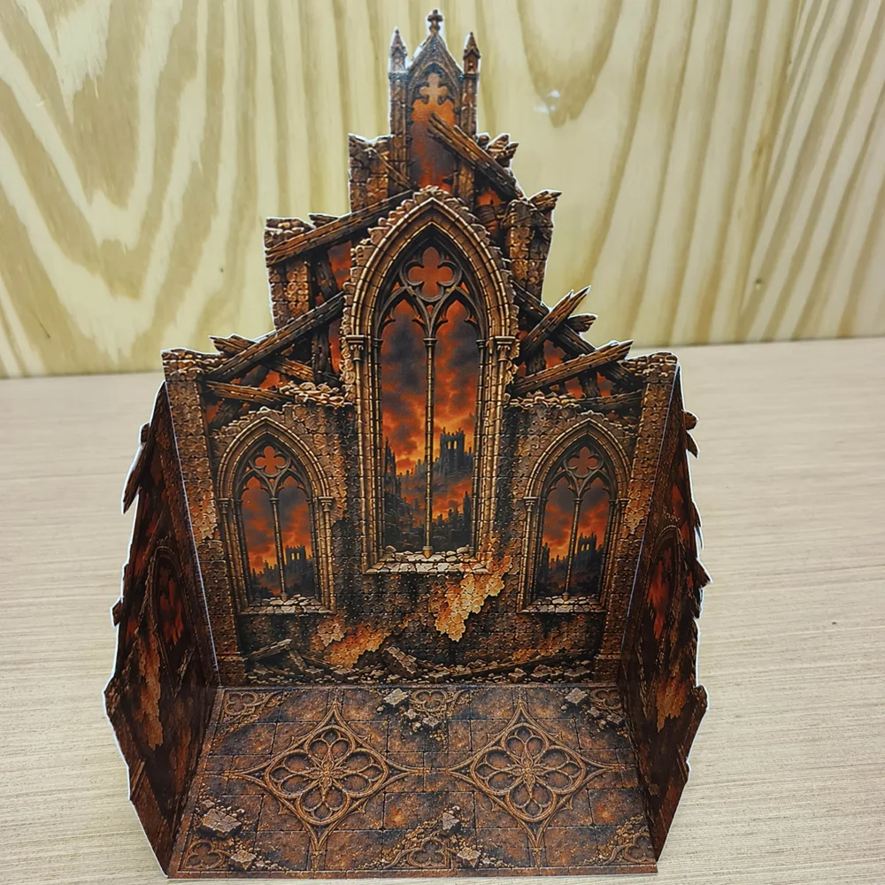
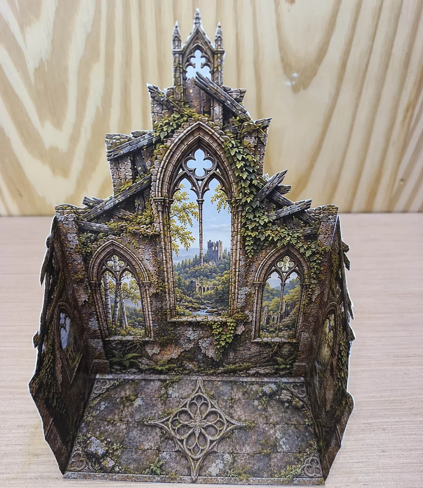
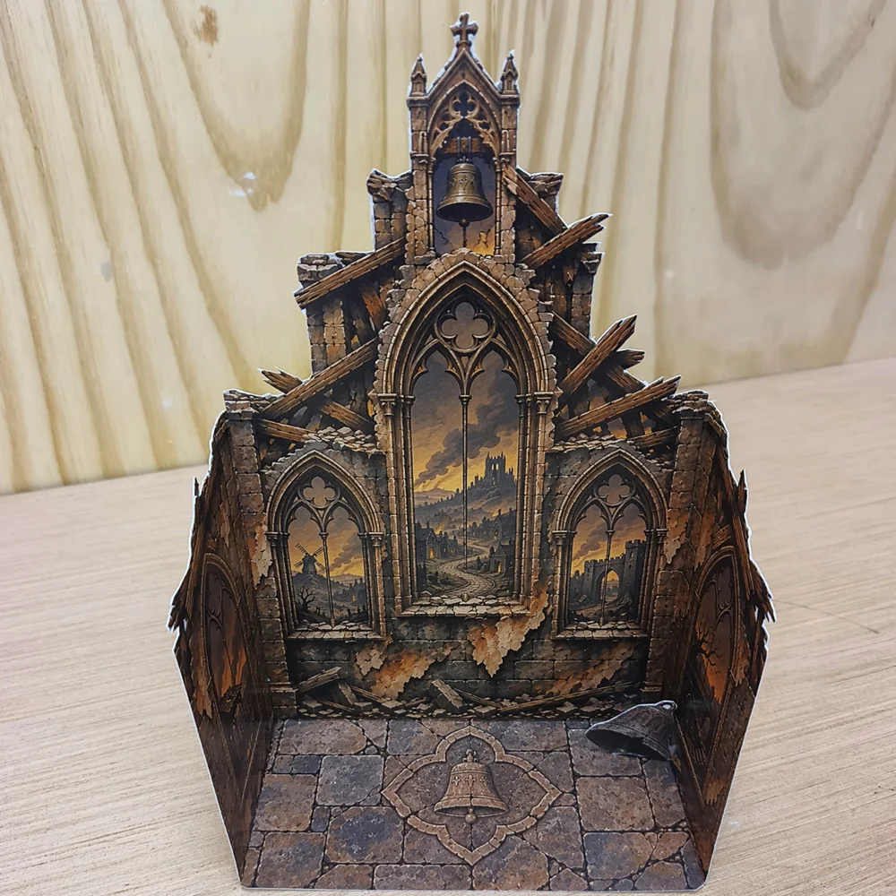
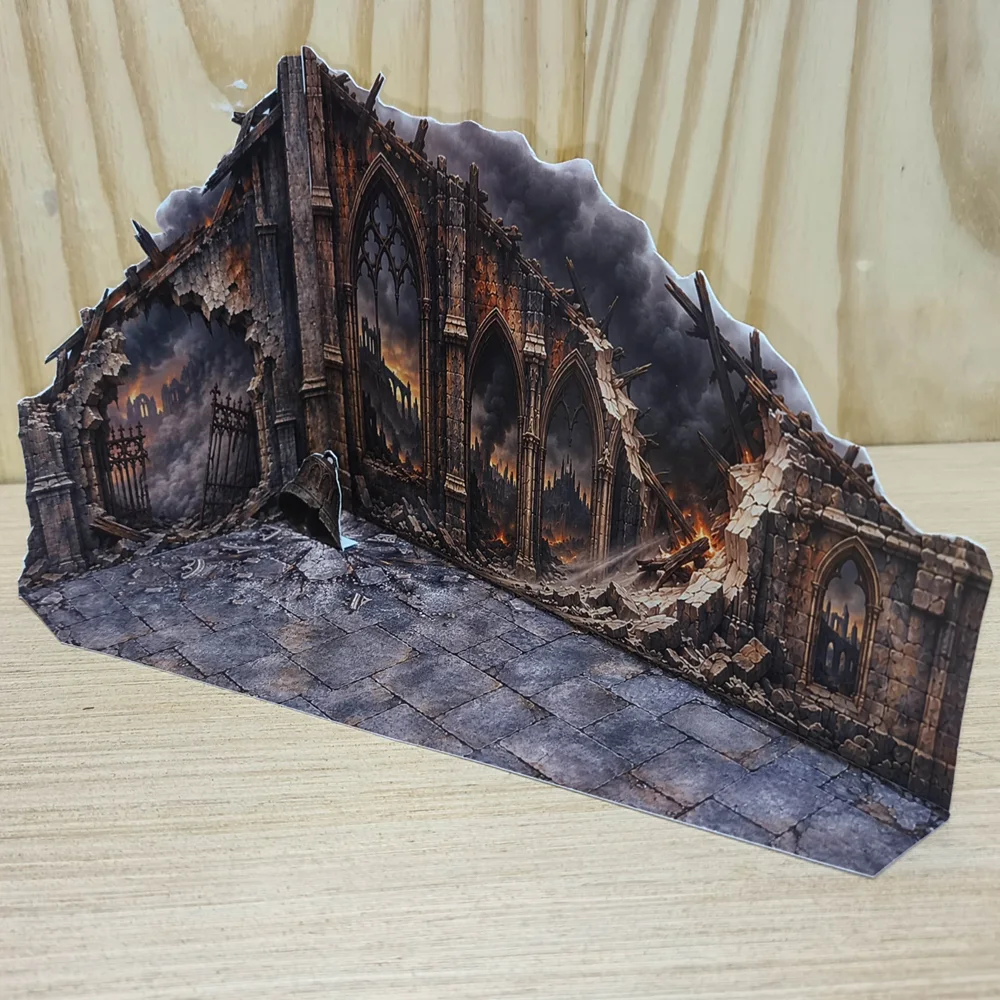
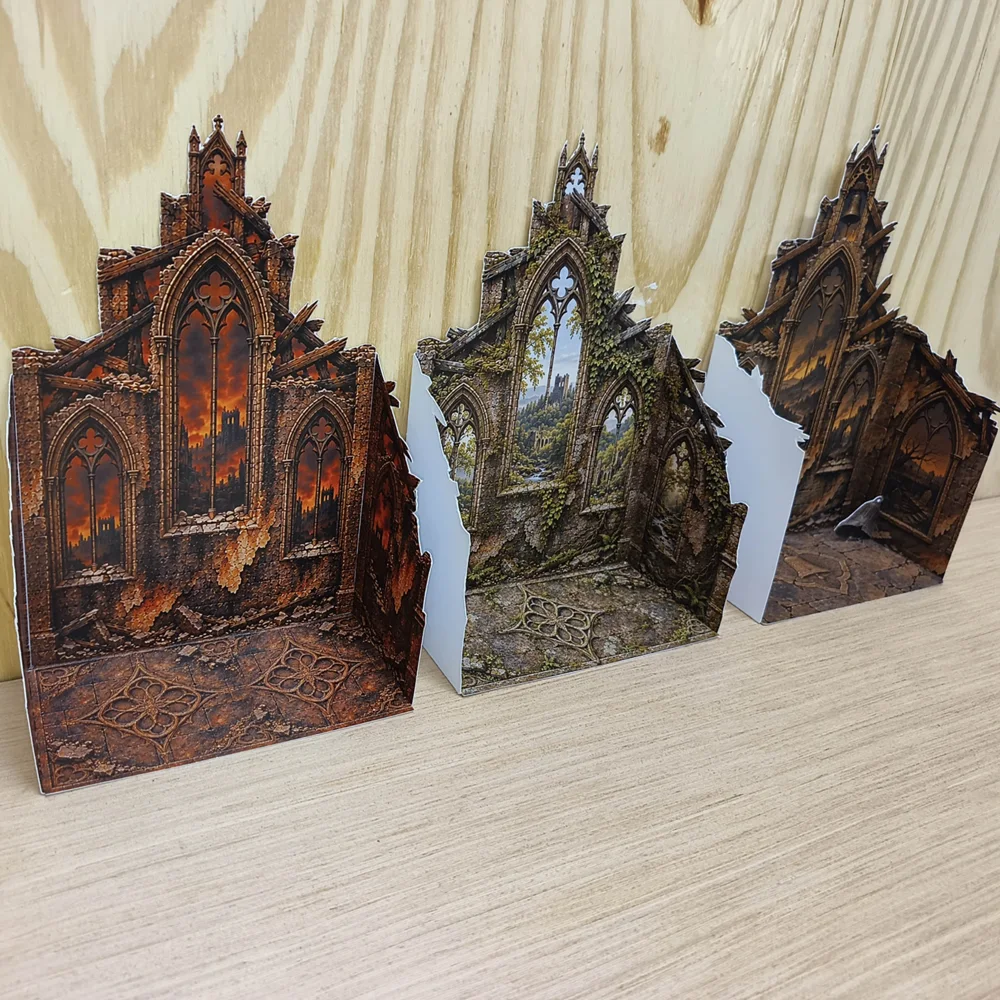

×

Ruine nach der Explosion
Geborstene Balken, Feuer hinter den Spitzbogenfenstern und zwei Rosetten im Steinboden.
16 cm breit · 22 cm hoch · 8 cm tief
Aufbau ansehen →Manche Miniaturen verdienen einen Platz für sich. Stell dein Lieblingsstück vor die hohen Fenster einer brennenden Kathedrale oder zwischen Mauern, über die schon wieder Efeu wächst.
Die sechs Dioramen entdecken ↓Sechs gotische Kulissen zum Ausdrucken, alle in einem Paket. Wähle ein Motiv für die Großansicht.
16 cm breit · 22 cm hoch · 8 cm tief
Linke Hälfte: 25 cm breit · am höchsten Punkt 17 cm hoch · 13 cm tief

Geborstene Balken, Feuer hinter den Spitzbogenfenstern und zwei Rosetten im Steinboden.
16 cm breit · 22 cm hoch · 8 cm tief
Aufbau ansehen →
Efeu wächst über die Mauern. Durch das hohe Fenster siehst du ein grünes Tal.
16 cm breit · 22 cm hoch · 8 cm tief
Aufbau ansehen →
Über dem großen Fenster hängt noch die Glocke. Auf dem Boden wiederholt sich ihr Umriss.
16 cm breit · 22 cm hoch · 8 cm tief
Aufbau ansehen →Vor den schmalen Fensterbögen liegt eine umgestürzte Glocke auf dem grauen Pflaster.
Linke Hälfte: 25 cm breit · 17 cm hoch · 13 cm tief
Aufbau ansehen →Ein einzelner Grabstein steht vor den zerbrochenen Fenstern des Kirchenschiffs.
Linke Hälfte: 25 cm breit · 17 cm hoch · 13 cm tief
Aufbau ansehen →Dunkle Rauchwolken steigen hinter der eingestürzten Wand auf. Durch die Bögen leuchtet die brennende Stadt.

Linke Hälfte: 25 cm breit · 17 cm hoch · 13 cm tief
Aufbau ansehen →
Die hohe Rückwand rahmt deine Figur im Regal ein. Stell sie etwas seitlich auf die Bodenplatte, damit das große Fenster hinter ihr sichtbar bleibt.
Für einen breiten Warhammer-40K-Fotohintergrund stellst du die linke und rechte Ruine mit den hohen Mauerkanten nebeneinander. Auf einem schmalen Regal genügt eine einzelne Hälfte.
Die Maße beschreiben den Platzbedarf des aufgebauten Displays. Die Bodenplatten haben keine maßstabsgetreuen Spielfeldmarkierungen. Die Dioramen sind für Regal, Vitrine und Fotografie gestaltet und eignen sich nicht als Spielfeld oder Turniergelände.
A4-Papier, Drucker, dünner Karton und ein Klebestift. Drucke bei 100 % und klebe den Ausdruck vor dem Ausschneiden flächig auf den Karton.
Bitte um einen Farbdruck auf 350-g/m²-Papier in Originalgröße. Die Teile kannst du anschließend direkt ausschneiden.
Schere, Lineal, ein stumpfes Werkzeug zum Vorfalzen und Papierkleber. Optional helfen Bastelmesser und Schneidematte bei feinen Konturen und Klebeband zum Verstärken der Ecken.
ZIP-Download · PDF · A4 · 300 dpi
Du bekommst drei hohe Motive und drei breite Motive mit je einer linken und einer rechten Variante. Drucke deinen Miniatur-Hintergrund zu Hause aus oder nimm die Vorlagen mit in den Copyshop.
7,95 € für das gesamte Paket.Ein unabhängiges Papercraft-Projekt von Ronald. Kein offizielles Warhammer-Produkt. Es besteht keine Verbindung zu Games Workshop.